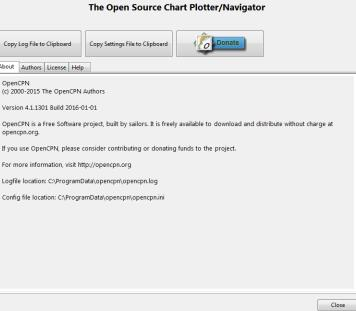

Welcome! This is the Documentation for the OpenCPN 4.8.2 stable release. (There are still areas that are not fully updated.) It is very easy and intuitive to get started with OpenCPN. The different menus, including the clever context-sensitive right-click menu, make it likely that you will find what you need. The program contains a lot of options to fit users with special demands and hardware.
Required reading YachtValhalla's PDF Tutorial for the new user starting up Exploring OpenCPN v3.0 (pdf download)
The most frequently asked questions by new users, seen in the OpenCPN Forum, are, in most cases, already answered in the OpenCPN USER MANUAL. If you are going to use this program for actual navigation, you need to read through this document to fully understand the scope of the program, as well as all the details.
If you have difficulties finding a particular subject, please use your browser's built-in search ability, often called just “Find”. This works best using the stable release which is all on one web page.
In the Program “OpenCPN” Press and then the Help Tab to access the built-in version of this document. The installed documentation will open in your default browser. This is the first place to go for help, read the documentation please. To download a current snapshot of this wiki as one huge web page, here (only works if you are online). Note that the details of downloading a single file html formatted properly have not been worked out yet.
Also the Opencpn v4.8.0 User Manual can be downloaded as compressed HTML files and directories:
You will need to uncompress them into a new folder and use your browser to access the help files.

If you encounter difficulties in using OpenCPN you may be asked to submit your Settings File and/or your Log File. This data will help the developers to diagnose your problem.
To locate these files, in the program “OpenCPN” Press and then the About Tab and two tabs will show as shown below:
| Copy Settings File to Clipboard | Copy Log File to Clipboard | Donate |
Use these tabs for an easy way to copy these files, and then paste the clipboard contents to a document and attach it to a Cruiser's Forum post.
As you can see above, also documents the people contributing to OpenCPN and a copy of the license OpenCPN uses, GNU GENERAL PUBLIC LICENSE Version 2. We are always looking for volunteers.
Here is the note that all users have to approve when installing the program.
OpenCPN is distributed in the hope that it will be useful, but WITHOUT ANY WARRANTY; without even the implied warranty of MERCHANTABILITY or FITNESS FOR A PARTICULAR PURPOSE. See the GNU General Public License for more details. OpenCPN must only be used in conjunction with approved paper charts and traditional methods of navigation. DO NOT rely upon OpenCPN for safety of life or property.
This is not a text on general navigation. We assume that you are familiar with nautical navigation. Reading this text and using OpenCPN will not in itself make you a “navigator”.
Getting started using OpenCPN consists of 4 basic steps:
If you still have questions or would just like to get in touch with other OpenCPN users, there is a large community behind OpenCPN. You can find us in this Cruisers Forum.
If you are an advanced users with programming experience we recommend the Developers Manual. (view online)